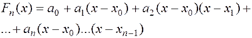
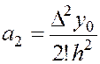
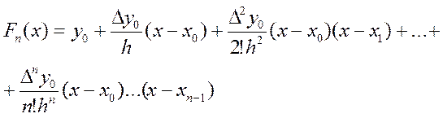
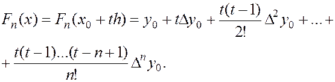

Перша інтерполяційна формула Ньютона.
Нехай мають місце рівності (1), для яких
 і складено відповідну таблицю . Будемо шукати інтерполяційний многочлен у вигляді
і складено відповідну таблицю . Будемо шукати інтерполяційний многочлен у вигляді

Це многочлен n-го степеня. Значення коефіцієнтів знайдемо із умови рівності інтерполяційної функції з даною функцією у вузлах інтерполяції. Поклавши в (6) , знаходимо , тобто . Послідовно, надаючи х значень отримуємо:
тобто
тобто
а .
Провівши аналогічні міркування, приходимо до рівності:
(7)
Підставивши (7) в (6), отримуємо вираз для многочлена (6).

На практиці остання формула використовується дещо в іншій формі. Покладемо
, тобто .
Тоді
і т.д.
Остаточно маємо:

Остання формула називається першою інтерполяційною формулою Ньютона Вона використовується для інтерполювання на початку відрізка інтерполяції, коли значення t достатньо мале за абсолютною величиною.